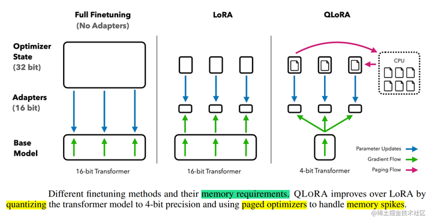
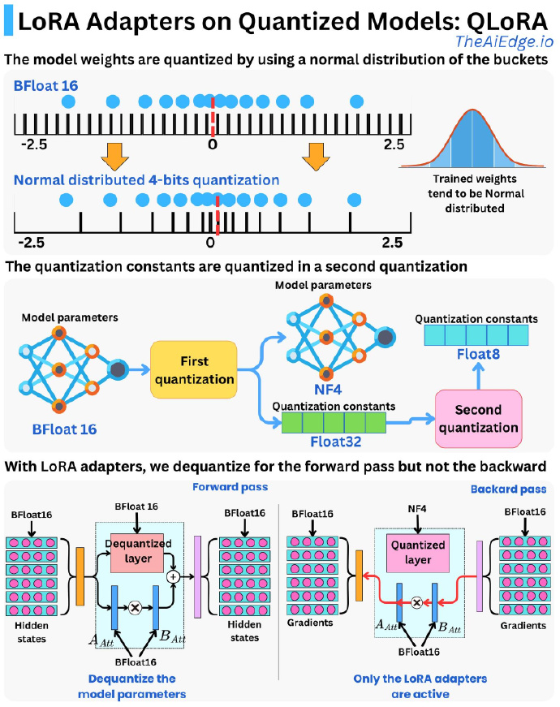

技术原理 [1] #
使用一种新颖的高精度技术将预训练模型量化为 4 bit，然后添加一小组可学习的低秩适配器权重，这些权重通过量化权重的反向传播梯度进行微调。
QLoRA提出了两种技术实现高保真 4 bit微调——4 bit NormalFloat(NF4) 量化和双量化。
- 4bit NormalFloat（NF4）：对于正态分布权重而言，一种信息理论上最优的新数据类型，该数据类型对正态分布数据产生比 4 bit整数和 4bit 浮点数更好的实证结果。
- 双量化：对第一次量化后的那些常量再进行一次量化，减少存储空间。
- 分页优化器: 使用此功能为优化器状态（Optimizer）分配分页内存，然后在 GPU 内存不足时将其自动卸载到 CPU 内存，并在优化器更新步骤需要时将其加载回 GPU 内存。

实验证明，无论是使用16bit、8bit还是4bit的适配器方法，都能够复制16bit全参数微调的基准性能。这说明，尽管量化过程中会存在性能损失，但通过适配器微调，完全可以恢复这些性能。
总结 #
QLoRA [189] quantizes the weights of LLMs into 4-bit and subsequently employs LoRA [224] in BF16 for each 4-bit weight matrix to fine-tune the quantized model. QLoRA allows for the efficient fine-tuning of a 65B parameter LLM on one GPU with only 30GB of memory.
老刘 #
QLoRA通过结合NF4量化（一种考虑权重分布的4位量化）、双重量化（进一步压缩量化常数）和LoRA（只训练少量适配器参数）来实现高效微调。其核心优势在于，它显著降低了存储模型权重所需的内存，并且在反向传播（梯度计算和参数更新）期间，冻结的基础模型权重保持低精度（NF4）状态，从而大幅减少了训练过程中的显存占用，使得在有限的硬件资源（如单个GPU）上微调非常大的模型成为可能。

实战 [10] #
QLoRA 微调[llama3] #
基于 4/8 比特 Bitsandbytes/HQQ/EETQ 量化进行指令监督微调[推荐]
llamafactory-cli train examples/train_qlora/llama3_lora_sft_otfq.yaml
基于 4/8 比特 GPTQ 量化进行指令监督微调
llamafactory-cli train examples/train_qlora/llama3_lora_sft_gptq.yaml
基于 4 比特 AWQ 量化进行指令监督微调
llamafactory-cli train examples/train_qlora/llama3_lora_sft_awq.yaml
QLoRA 微调[LLaMA-65B] [11] #
参数 #
1xx. [大模型微调技术] LoRA、QLoRA、QA-LoRA 原理笔记
1xx. 大模型实操 | LoRA、QLoRA微调大模型实战技巧分享，含常见QA解答！
实战 #
-
高效微调技术QLoRA实战，基于LLaMA-65B微调仅需48G显存，真香
先是训练llama-7b, 再是训练llama-65b. qlora git
1xx. 4bits_training
【手把手带你实战HuggingFace Transformers-低精度训练篇】4bit量化与QLoRA模型训练 v 原理+实战